Глава 4. Частотные характеристики электрической цепи
4.1. Комплексные передаточные функции линейных электрических цепей4.2. Частотные характеристики последовательного колебательного контура
4.3. Частотные характеристики параллельного колебательного контура
4.4. Частотные характеристики связанных колебательных контуров
4.5. Частотные характеристики реактивных двухполюсников
4.6. Машинные методы анализа частотных характеристик электрических цепей
Вопросы и задания для самопроверки
Глава 4. Частотные характеристики электрической цепи
4.1. Комплексные передаточные функции линейных электрических цепей
Важнейшей характеристикой линейной электрической цепи является комплексная передаточная функция H(j ). При этом электрическую цепь удобно изображать в виде четырехполюсника (рис. 4.1), на входные зажимы (1 – 1' ) которого подается сигнал в виде напряжения с комплексной амплитудой Um1, или тока с комплексной амплитудой Im1, а реакция снимается с выходных зажимов (2 – 2' ) также в виде напряжения или тока с комплексными амплитудами Um2, Im2>. Комплексная передаточная функция (КПФ) определяется как отношение комплексной амплитуды реакции цепи к комплексной амплитуде входного воздействия.
В зависимости от типов входного воздействия и реакции цепи различают следующие виды КПФ:
1. Комплексная передаточная функция по напряжению
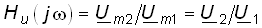
, (4.1)где Um1, Um2, U1, U2 – комплексные амплитуды и комплексные действующие значения напряжения воздействия на входе и напряжения реакции на выходе.
2. Комплексная передаточная функция по току
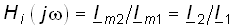
, (4.2)где Im1, Im2, I1, I2 — комплексные амплитуды и действующие значения тока воздействия и тока реакции.
3. Комплексное передаточное сопротивление
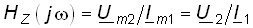
. (4.3)4. Комплексная передаточная проводимость
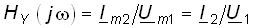
(4.4)Из данных определений следует, что Hu(j ) и Hi(j ) являются безразмерными величинами, a HZ(j ) и HY(j ) – имеют соответственно размерности сопротивления и проводимости.
Комплексные передаточные функции определяются на частоте
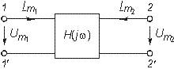
Рис. 4.1
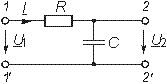
Рис. 4.2
сигнала воздействия и зависят только от параметров цепи.
Как всякую комплексную величину H(j ) можно представить в показательной, тригонометрической и алгебраической форме:
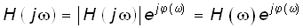
; (4.5)
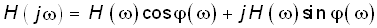
; (4.6)
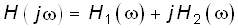
, (4.7)где
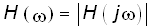
– модуль комплексной передаточной функции называется амплитудно-частотной характеристикой цепи (АЧХ), а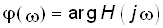
– аргумент комплексной передаточной функции называют фазо-частотной характеристикой цепи (ФЧХ). Величины
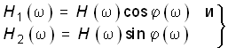
(4.8)есть вещественная и мнимая части комплексной передаточной функции цепи.
Из (4.5)–(4.8) нетрудно получить соотношения, связывающие АЧХ и ФЧХ с вещественными и мнимыми частями комплексной передаточной функции
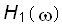
и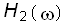
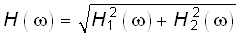
; (4.9)
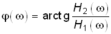
. (4.10)АЧХ и ФЧХ являются наиболее фундаментальными понятиями теории цепей и широко используются на практике. Важность этих характеристик для систем электрической связи, радиовещания и телевидения объясняется самой природой передачи сигналов определенного спектрального состава по каналам связи. Требования к АЧХ и ФЧХ различных устройств являются определяющими при проектировании любой аппаратуры связи, так как от степени их выполнения во многом зависит качество передачи информации.
Пример. Определить КПФ по напряжению Hu(j ), АЧХ и ФЧХ цепи, изображенной на рис. 4.2.
Согласно (4.1) запишем:
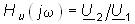
.Найдем комплексное действующее значение напряжения на выходе цепи:
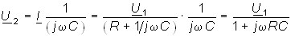
.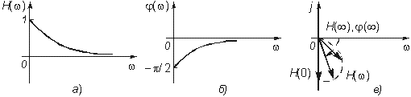
Рис. 4.3
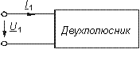
Рис. 4.4
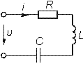
Рис. 4.5
Подставив U2 в формулы для Hu(j ), получим КПФ:
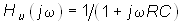
; (4.11)АЧХ цепи
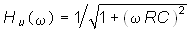
; (4.12)ФЧХ цепи
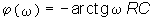
(4.13)(АЧХ и ФЧХ цепи изображены на рис. 4.3, а, б).
АЧХ и ФЧХ цепи можно представить единым графиком, если построить зависимость КПФ H(j ) от частоты на комплексной плоскости. При этом конец вектора H(j ) опишет некоторую кривую, которая называется годографом комплексной передаточной функции (рис. 4.3, в).
В ряде случаев частотные характеристики цепи могут изменяться в очень широких пределах, поэтому более удобно их оценивать в логарифмическом масштабе. С этой целью для оценки АЧХ вводят понятие логарифмической амплитудно-частотной характеристики (ЛАХ):
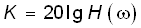
(4.14)Оценивается ЛАХ согласно (4.14) в децибелах (дБ). В активных цепях К называют еще логарифмическим усилением. Для пассивных цепей вместо коэффициента усиления оперируют ослаблением цепи:
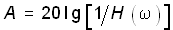
, (4.15)которое также оценивается в децибелах.
Наряду с передаточными функциями (4.1)—(4.4) в ряде случаев (см. гл. 16, 17,18) находят применение комплексные функции, определяющиеся отношением комплексной реакции к комплексному воздействию на входных зажимах электрической цепи (рис. 4.4)
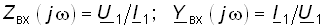
. (4.16)Функции вида (4.16) носят название комплексных входных функций цепей.
4.2. Частотные характеристики последовательного колебательного контура
В радиотехнике и электросвязи большое значение имеет явление резонанса. Резонансом называют такое состояние электрической цепи, состоящей из разнохарактерных реактивных элементов, при котором фазовый сдвиг между входным током и приложенным напряжением равен нулю. Цепи, в которых возникает явление резонанса, называют колебательными контурами, или резонансными цепями.
Колебательные контуры и явления резонанса находят широкое применение в радиотехнике и электросвязи. Резонансные цепи являются составной частью многих радиотехнических устройств: избирательные цепи в радиоприемниках и усилителях, частотно-зависимые элементы автогенераторов, фильтров, корректоров, других устройств. Для получения высоких технико-экономических показателей (избирательности, полосы пропускания, коэффициента прямоугольности, равномерности и т. д.) резонансные цепи должны иметь достаточно сложную структуру (многоконтурные связанные цепи, активные резонансные системы и др.). Некоторые из этих систем будут рассмотрены в гл. 15, 17. В настоящей главе изучим основные особенности работы цепей в режиме резонанса на примере простейших колебательных контуров.
Простейший колебательный контур содержит индуктивный и емкостный элементы, соединенные последовательно (последовательный контур) или параллельно (параллельный контур). В последнее время широкое распространение получили резонансные цепи на базе операционных усилителей (ОУ). Различают два типа резонансов: напряжений и токов. В последовательном контуре возникает резонанс напряжений, а в параллельном – резонанс токов.
Частоту, на которой наблюдается явление резонанса, называют резонансной.
На рис. 4.5 изображена схема последовательного контура с реактивными элементами L и С и резистивным сопротивлением R, характеризующим потери в контуре. Приложим к контуру гармоническое напряжение с частотой . Комплексное входное сопротивление контура на данной частоте определяется согласно уравнению
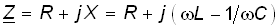
, (4.17)а ток в контуре уравнением
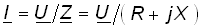
. (4.18)Фазовый сдвиг между током и приложенным напряжением
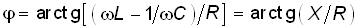
. (4.19)При резонансе = 0, что возможно, если
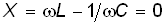
. (4.20)Отсюда получаем уравнение резонансной частоты 0:
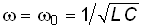
. (4.21)На резонансной частоте комплексное сопротивление носит чисто активный характер, т. е. Z = R, ток совпадает по фазе с приложенным напряжением и достигает максимального значения I0 = = U/R. Реактивные сопротивления контура на резонансной частоте 0 равны друг другу:
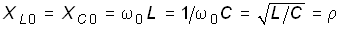
. (4.22)Величина
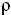
носит название характеристического сопротивления контура.Резонансные свойства контура характеризуются добротностью контура, которая в общем случае определяется величиной
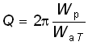
, (4.23)где Wр — максимальные значения реактивной энергии, запасенной в контуре при резонансе; WaТ — активная энергия, поглощаемая в контуре за период Т. Величина, обратная добротности, называется затуханием контура и обозначается d:
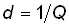
. (4.24)Величина Q безразмерна и обычно колеблется для реальных контуров от 10 до 100 и выше. Для выяснения физического смысла параметра Q исследуем энергетические соотношения в контуре при резонансе. Положим, например, что при резонансе ток в цепи
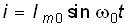
. Определим согласно (1.10) и (1.13) сумму энергий электрического и магнитного полей:
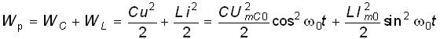
.Если учесть, что при резонансе
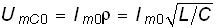
, т. е.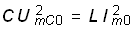
, то получим, что сумма энергий электрического и магнитного полей при резонансе остается постоянной
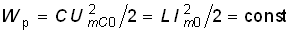
,так как уменьшение WL сопровождается увеличением WC и наоборот. Таким образом, происходит периодический обмен энергией между элементами L и С без участия источника. Энергия источника расходуется только на покрытие тепловых потерь в элементе активного сопротивления R; реактивная мощность при резонансе не потребляется.
Активная энергия, рассеиваемая в контуре за период Т, равна
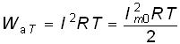
.Откуда принимая во внимание, что
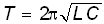
, с учетом (4.23), получаем
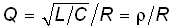
. (4.25)Найдем отношение действующих значений напряжений на реактивных элементах (L и С) к действующему значению приложенного напряжения при резонансе:
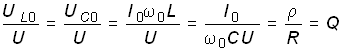
(4.26)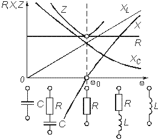
Рис. 4.6
Таким образом, добротность Q показывает, во сколько раз резонансные напряжения на реактивных элементах превышают приложенное напряжение. Отсюда следует и термин “резонанс напряжений”. Это свойство контура “усиливать” приложенное напряжение резонансной частоты широко используется на практике.
Величины , 0, Q, d являются вторичными параметрами контура в отличие от величин R, L, С называемых первичными.
Анализируя характер уравнений напряжений и токов в RLC-цепи, фазовых сдвигов между ними при гармоническом воздействии нетрудно видеть, что они являются частотно-зависимыми. Эта зависимость вытекает непосредственно из зависимости реактивных элементов XL и XC от частоты . На рис. 4.6 и 4.7 изображены зависимости XL( ), XC( ), Z( ), ( ), определяемые формулами:
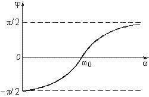
Рис. 4.7
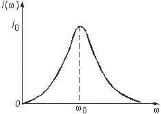
Рис. 4.8
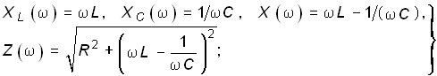
(4.27)
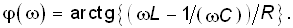
(4.28)Из представленных характеристик следует, что при < 0 цепь имеет емкостный характер (Х < 0; < 0) и ток опережает по фазе приложенное напряжение при > 0 характер цепи индуктивный (Х > 0; > 0) и ток отстает по фазе от приложенного напряжения; при = 0 наступает резонанс напряжений (Х = 0; = 0) и ток совпадает по фазе с приложенным напряжением. Полное сопротивление цепи принимает при этом минимальное значение Z = R.
Зависимость действующего значения тока от частоты можно найти из уравнения (4.18)* :
. (4.29)
* Зависимость (4.29) носит название резонансной кривой тока (рис. 4.8).
Действующие значения напряжений на реактивных элементах можно найти согласно закону Ома:
, (4.30)
. (4.31)
Зависимости I( ), UL( ), UC( ) называются резонансными характеристиками тока и напряжений. Анализ зависимости I( ) показывает, что она достигает максимума при резонансе = 0
. (4.32)
Выходное напряжение обычно снимается с емкостного или индуктивного элемента контура. В соответствии с этим представляет наибольший практический интерес КПФ по напряжению относительно элементов С и L:
, (4.33)
. (4.34)
Из уравнений (4.33) и (4.34) нетрудно получить уравнения АЧХ и ФЧХ последовательного контура
; (4.35)
; (4.36)
(4.37)
На рис. 4.9 изображены АЧХ и ФЧХ последовательного контура, определяемые формулами (4.35)—(4.37).
Как следует из представленных зависимостей, АЧХ HC(
), HL(
) носят экстремальный характер, причем при
=  , HL(
, HL( ) = = 1; HC(
) = = 1; HC( ) = 0; при
=
0 согласно (4.25) имеем
) = 0; при
=
0 согласно (4.25) имеем
. (4.38)
Максимальные значения HC( ) и HL( ) достигаются на частотах C и L, которые могут быть определены из условий
Рис. 4.9
. (4.39)
Подставив значения HC( ) и HL( ) из (4.35) и (4.36) в (4.39) и решив полученные уравнения, получим
. (4.40)
При этом АЧХ HC( ) и HL( ) примут максимальные значения:
. (4.41)
Анализ полученных зависимостей показывает, что с увеличением добротности Q (уменьшением затухания d) частоты C и L сближаются с резонансной частотой 0. При этом НCт и НLт возрастают.
Степень отклонения режима колебательного контура от резонанса принято оценивать абсолютной, относительной и обобщенной расстройками. Отклонение от резонансного режима может происходить в результате изменения частоты задающего генератора или вариации параметров контура.
Расстройки определяются следующим образом:
абсолютная
; (4.42)
относительная
; (4.43)
обобщенная
. (4.44)
Наиболее широко в теоретических исследованиях применяется обобщенная расстройка , так как ее использование существенно упрощает расчет. Например, модуль входной проводимости можно записать через обобщенную расстройку в форме
, (4.45)
а аргумент в форме
. (4.46)
Важной характеристикой колебательного контура является полоса пропускания. В общем случае абсолютной полосой пропускания называют диапазон частот в пределах которого коэффициент передачи уменьшается в раз по сравнению с максимальным* . Абсолютная полоса пропускания равна
, (4.47)
* Существуют и другие определения полосы пропускания, соответствующие другому зна-чению ослабления тока или напряжения (см. гл. 17).
а относительная
, (4.48)
где f1 и f2 — нижняя и верхняя граничные частоты.
Для нахождения граничных частот f1 и f2 полосы пропускания решим уравнение (рис. 4.10). В результате с учетом (4.47) получим , откуда
. (4.49)
Из вышеизложенного следует, что на границе полосы пропускания 1,2 = ±l и = ±45 .
Абсолютную и относительную полосу пропускания  fA можно выразить через добротность Q
fA можно выразить через добротность Q
(4.50)
Уравнения (4.50) могут быть положены в основу экспериментального определения добротности по резонансной кривой тока I( ). Формула (4.50) показывает, что чем выше добротность Q, тем меньше полоса пропускания и наоборот. Причем, поскольку с увеличением потерь R добротность контура падает, то подключение к контуру сопротивления нагрузки или источника с внутренним сопротивлением приводит к расширению полосы пропускания.
Пример. Определить полосу пропускания контура, нагруженного на резистивное сопротивление Rн (рис. 4.11, а).
Преобразуем параллельный участок С и Rн в эквивалентный последовательный с помощью формул (3.56):
Рис. 4.10
Рис. 4.11
.
Важным для практики является случай, когда Rн XС = 1/ C, при этом для R' н и X' C можно записать
.
т. е. при подключении высокоомной нагрузки к контуру его резонансная частота не изменяется, но увеличиваются потери в контуре (рис. 4.11, б). При этом уменьшается добротность Q' = /(R + ) и увеличивается полоса пропускания контура (4.10).
В заключение следует отметить, что на практике обычно используются высокодобротные контуры, причем низкоомные нагрузки подключаются к контурам через различные согласующие устройства (трансформаторы, повторители и др.). Для получения высоких качественных характеристик (большого входного и низкого выходного сопротивлений, высокой добротности, малой чувствительности резонансной частоты и выходного сигнала от нагрузки) применяют электронные аналоги колебательных контуров, реализуемых на базе зависимых источников. На рис. 4.12 изображена схема колебательного контура, реализованного на базе ARC-звена, второго порядка (рис. 3.37, а), где принято Y1 = G1; Y2 = j C2; Y3 = G3; Y4 = G4; Y5 = j C5. При этом комплексная передаточная функция цепи с учетом (3.138)
(4.51)
где
.
Комплексная передаточная функция (4.33) пассивного RLC-контура можно также представить в следующем виде:
. (4.52)
где a' 0 = b' 0 = l; b' 2 = LC; b' 1 = RC, т. е. (4.52) совпадает с (4.51) с точностью до постоянных множителей.
Рис. 4.12
Рис. 4.13
Таким образом, с помощью рассмотренной активной цепи можно получить электронный аналог колебательного контура. На базе активных элементов можно реализовать и другие схемы электронных аналогов колебательных контуров, важным преимуществом которых является отсутствие индуктивностей, высокое значение добротности, слабо зависящей от нагрузки, легкость перестройки.
4.3. Частотные характеристики параллельного колебательного контура
Простейший параллельный колебательный контур с потерями в ветвях R1 и R2 имеет вид, изображенный на рис. 4.13. Комплексная входная проводимость такого контура
, (4.53)
где Y1 = G1—jВ1; Y2 = G2—jВ2 — комплексные проводимости ветвей с индуктивностью и емкостью соответственно. Проводимости G1, G2, B1, B2 можно найти из формул преобразования (3.57):
(4.54)
где ; .
Из условия резонанса токов имеем: = arctg(B/G) = 0. Отсюда следует:
. (4.55)
Решив (4.55) относительно , получим уравнение резонансной частоты:
. (4.56)
Из уравнения (4.56) следует, что резонанс в параллельном контуре возможен лишь в случае неотрицательности подкоренного выражения (т. е. при R1 < и R2 < , или R1 > и R2 > ).
Реактивные составляющие токов в ветвях при резонансе равны друг другу:
. (4.57)
При этом ток в неразветвленной части цепи определяется из уравнения
, (4.58)
где активное сопротивление R0э, называют эквивалентным резонансным сопротивлением параллельного контура. Как следует из уравнения (4.58), входной ток контура совпадает по фазе с приложенным напряжением. Величину R0э можно найти из условия резонанса токов. Так как при резонансе токов В = 0, то согласно (4.53) и (4.54) полная эквивалентная проводимость контура
. (4.59)
Подставив значение p из (4.56) в (4.59) получим:
, (4.60)
откуда
. (4.61)
Наибольший теоретический и практический интерес представляют резонанс токов в контурах без потерь и с малыми потерями.
Контур без потерь. Для контура без потерь (R1 = R2 = 0) уравнение резонансной частоты (4.56) принимает вид
, (4.62)
т. е. совпадает с выражением (4.21) для последовательного контура. Эквивалентное сопротивление контура без потерь R0э =  и входной ток равен нулю, а добротность обращается в бесконечность. Комплексы действующих значений токов в ветвях
и входной ток равен нулю, а добротность обращается в бесконечность. Комплексы действующих значений токов в ветвях
, (4.63)
т. е. ток в индуктивности отстает от приложенного напряжения на /2, а в емкости опережает на /2. На рис. 4.14, а изображена векторная диаграмма токов для этого случая при U = Uej0 = U.
Рис. 4.14
Сумма энергий электрического и магнитного полей для параллельного контура без потерь, как и для последовательного контура остается неизменной, т. е. энергетические процессы протекают аналогично процессам в последовательном контуре.
Частотные зависимости характеристик параллельного контура от частоты имеют вид
(4.64)
На рис. 4.15 изображены графики зависимостей (4.64). Как следует из рисунка, при
<
0 входное сопротивление контура носит индуктивный, а при
>
0 емкостный характер, причем вследствие отсутствия потерь при переходе через
=
0 ФЧХ контура изменяется скачком от —
/2 до
/2, а входное реактивное сопротивление контура претерпевает разрыв (|Х| =  ). Частотная зависимость входного тока определяется уравнением
). Частотная зависимость входного тока определяется уравнением
, (4.65)
т. е. является зеркальным отображением модуля реактивной проводимости |В( )| (на рис. 4.15 показано штриховой линией).
Контур с малыми потерями (R1  ; R2
; R2
 p). Резонансная
частота для этого случая будет приближенно совпадать с частотой
0. Для контура с малыми потерями можно принять, что
2
p). Резонансная
частота для этого случая будет приближенно совпадать с частотой
0. Для контура с малыми потерями можно принять, что
2  R1R2,
тогда
R1R2,
тогда
, (4.66)
где R = R1 + R2. Ток в неразветвленной части цепи
, (4.67)
а комплексные значения токов в ветвях
, (4.68)
где
,
т. е. действующие значения токов в ветвях
. (4.69)
Из уравнений (4.67) и (4.69) следует, что отношение токов в ветвях к току в неразветвленной части цепи равно добротности контура:
, (4.70)
т. е. ток в реактивных элементах L и С при резонансе в Q раз больше тока на входе контура (отсюда термин “резонанс токов”). На рис. 4.14, б изображена векторная диаграмма токов для этого случая. В контуре с потерями сумма энергий электрического и магнитного полей не остается постоянной с течением времени.
Рис. 4.15
Интересен случай R1 = R2 = . Как следует из уравнения (4.56), для р получаем неопределенность, при этом входное сопротивление контура имеет чисто резистивный характер на любой частоте (случай безразличного резонанса).
Рассмотрим частотные характеристики контура с малыми потерями. Комплексное эквивалентное сопротивление контура можно определить уравнением
. (4.71)
В режиме малых расстроек в цепи с незначительными потерями
с учетом малости потерь (R1  L
и R2
L
и R2  1/ C)
уравнение (4.71) можно переписать в такой форме:
1/ C)
уравнение (4.71) можно переписать в такой форме:
. (4.72)
Выделяя в (4.72) активную Rэ и реактивную Хэ составляющие, получаем уравнения частотных характеристик:
. (4.73)
На рис. 4.16, а изображены нормированные относительно R0эчастотные характеристики Rэ/R0э, Xэ/R0э, и Zэ/R0э как функции обобщенной расстройки . Фазочастотная характеристика цепи определится уравнением (рис. 4.16, б):
. (4.74)
Рис. 4.16
Анализ полученных зависимостей показывает, что по своему виду частотные характеристики контура с потерями существенно отличаются от характеристик контура без потерь. Это отличие касается прежде всего зависимости реактивного сопротивления контура от частоты: для контура с потерями при резонансе оно оказывается равным нулю (см. рис. 4.16, а), а в контуре без потерь терпит разрыв (см. рис. 4.15).
Зависимость комплексного входного тока от частоты определяется из уравнения
, (4.75)
т. е. при резонансе ( = 0) ток принимает минимальное значение, определяемое формулой (4.58) (рис. 4.16, в).
Частотная зависимость токов I1( ) и I2( ) в ветвях определяется согласно закону Ома:
,
т. е. ток I1 с увеличением частоты
уменьшается, а I2 растет, причем в пределе I1( ) = 0; I2(
) = 0; I2( ) = U/R2.
) = U/R2.
Комплексная передаточная функция по току в ветвях с L и С параллельного колебательного контура определяется в соответствии с (4.2):
; (4.76)
. (4.77)
Рис. 4.17
Рис. 4.18
Отсюда получаем АЧХ и ФЧХ КПФ по току для контура с малыми потерями:
(4.78)
(4.79)
(4.80)
(4.81)
В контуре с малыми потерями при резонансе АЧХ принимает значения:
. (4.82)
Сравнение формул (4.32)—(4.38) с формулами (4.78)—(4.81) показывает, что КПФ по току параллельного контура дуально соответствует КПФ по напряжению для последовательного контура.
Рассмотрим, как влияет на резонансные свойства параллельного контура подключение его к источнику с задающим напряжением Uг и внутренним сопротивлением Rг. При этом выходное напряжение снимается с контура (рис. 4.17). Нетрудно видеть, что комплексное напряжение на контуре
, (4.83)
где Zэ определяется формулой (4.71). При резонансе токов
. (4.84)
Определим отношение Uк/Uкр с учетом (4.72), (4.83), (4.84);
. (4.85)
Введем понятие эквивалентной добротности контура
. (4.86)
Тогда после несложных преобразований формулы (4.85) с учетом (4.44) и (4.86) получаем
. (4.87)
Из (4.87) нетрудно получить АЧХ и ФЧХ относительно напряжения на контуре, нормированного к напряжению Uкр,
; (4.88)
. (4.89)
На рис. 4.18 показан характер этих зависимостей при различных сопротивлениях Rг источника.
Полоса пропускания параллельного контура определяется как полоса частот, на границе которой напряжение на контуре уменьшается в раз относительно Uкр (см. рис. 4.18):
.
Отсюда получаем уравнение граничных частот полосы пропускания:
. (4.90)
При этом абсолютная  fa и относительная
f0 полосы пропускания будут равны:
fa и относительная
f0 полосы пропускания будут равны:
, (4.91)
. (4.92)
Сравнение уравнений (4.50) с уравнениями (4.91) и (4.92) показывает, что параллельный контур в общем случае имеет более широкую полосу пропускания, чем последовательный с такой же добротностью. И только при Rг =  (см. рис. 4.18) их полосы пропускания равны.
(см. рис. 4.18) их полосы пропускания равны.
Таким образом, для улучшения избирательных свойств параллельного контура его необходимо возбуждать источником тока. Из уравнения (4.84) также следует, что параллельный контур нельзя использовать для усиления напряжения, если использовать независимый источник, так как при этом Uкp < Uг.
Рис. 4.19
Рис. 4.20
Поэтому для усиления напряжения и получения высокой добротности параллельного контура используют активные цепи с зависимыми источниками тока. На рис. 4.19 приведен пример подобной схемы на базе полевого транзистора и его эквивалентная схема замещения.
4.4. Частотные характеристики связанных колебательных контуров
В ряде радиотехнических устройств (входные цепи радиоприемников, усилители, фильтры сосредоточенной селекции, выходные каскады радиопередатчиков и др.) применяются системы связанных колебательных контуров. Отличительной особенностью связанных контуров является лучшая избирательность* АЧХ по сравнению с одиночными контурами. Это позволяет лучше отфильтровать частоты за границами полосы пропускания, обеспечить большую равномерность, а, следовательно, меньшие частотные искажения сигнала в полосе пропускания. На рис. 4.20 приведена обобщенная схема двух связанных колебательных контуров: с внутренней связью (рис. 4.20, а) и внешней связью (рис. 4.20, б), где Z1, Z2 — комплексное сопротивление первого и второго контуров, Zсв — комплексное сопротивление связи между контурами, Zн — сопротивление нагрузки.
Переход от схемы, изображенной на рис. 4.20, а к схеме рис. 4.20, б можно осуществить с помощью формул преобразования “звезда—треугольник” (см. § 2.2).
* Под избирательностью понимают способность контура усиливать сигналы (напряжения, токи) различных частот в неодинаковое число раз.
Рис. 4.21
В зависимости от вида связи различают контуры с трансформаторной связью (рис. 4.21, а), автотрансформаторной связью (рис. 4.21, б), емкостной связью (внутренней) (рис. 4.21, в), комбинированной связью (рис. 4.21, г) и др. Важнейшей характеристикой связанных контуров является коэффициент связи. Для контура с трансформаторной связью коэффициент связи определяется известной формулой (3.74). Для других видов связи коэффициент k можно найти с помощью формулы
, (4.93)
где Хсв — реактивная составляющая комплексного сопротивления связи Zсв; Х1, Х2 — реактивные сопротивления первого и второго контуров того же знака, что и реактивное сопротивление связи Хсв. Например, для контура с индуктивной автотрансформаторной связью (рис. 4.21, б) коэффициент связи
, (4.94)
где
.
Для контура с емкостной связью (рис. 4.21, в) аналогично получаем:
(4.95)
где ,
и для контура с комбинированной связью
Рис. 4.22
. (4.96)
Исследование частотных характеристик связанных колебательных контуров удобно вести с помощью одноконтурных схем замещения (рис. 4.22), которые могут быть получены для обобщенной схемы (рис. 4.20, а) аналогично уравнениям трансформатора (3.106):
(4.97)
где Z11 = Z1 + Zсв; Z22 = Z2 + Zсв.
Решая систему уравнений (4.97) относительно I1 и I2 и учитывая уравнение для вносимых сопротивлений (3.111), (3.112), получаем для схемы (рис. 4.22, а) и (рис. 4.22, б)
. (4.98)
Для схемы (рис, 4.22, в) и (рис. 4.22, г)
. (4.99)
Резонанс в системе связанных контуров достигается соответствующей их настройкой и подбором оптимальной связи между ними. В зависимости от видов настройки различают:
1. Первый частный резонанс, который обеспечивает максимум тока I1max = U1/(R11 + R1вн) и достигается настройкой первого контура до обеспечения условия: X11 = –X1вн (см. рис. 4.22, а).
2. Второй частный резонанс, обеспечивающий максимум тока I2max = (U1Xсв/Z11)/(R22 + R2вн) и который достигается настройкой до обеспечения условия X22 = —Х2вн (см. рис. 4.22, в).
3. Сложный резонанс — осуществляется путем настройки каждого контура на частный резонанс и подбором оптимального сопротивления связи
. (4.100)
При этом I2 во втором контуре достигает максимального значения (максимум максиморум):
. (4.101)
Нетрудно видеть, что настройка I контура в первый частный резонанс и подбор связи (4.100) эквивалентен условию Z = ; аналогично второй частный резонанс совместно с условием (4.100) эквивалентен условию Z22 = .
4. Полный резонанс — достигается настройкой каждого контура в индивидуальный резонанс (Х11 = 0; Х22 = 0) и подбором оптимальной связи:
. (4.102)
При этом ток I2 определяется также формулой (4.101).
Уравнение сопротивления связи (4.100) может быть получено из уравнения dI2/dXсв = 0 при условиях Z11 = ; Z22 = , где I2 определяется из (4.99). Аналогично уравнение (4.102) получаем из решения уравнения dI2/dXсв = 0 при Х11 = 0 и Х22 = 0.
Сравнение сложного и полного резонансов показывает, что в последнем случае I2mахmах достигается при меньшем сопротивлении связи.
Связанные контуры обычно используются в режиме передачи максимальной мощности во вторичный контур: P2 =I22R22, поэтому среди частотных характеристик наибольший интерес представляет зависимость I2( ).
Выразим сопротивление контуров Z11 и Z22 (см. рис. 4.20, а) через обобщенную расстройку :
(4.103)
Подставив Z11, Z22 и Zсв в (4.99), получим для тока I2:
. (4.104)
Рис. 4.23
Рис. 4.24
На частотах, близких к резонансу, можно считать, что
, (4.105)
где Q1 = 1/R11; Q2 = 2/R22 — добротность контуров; k — коэффициент связи между контурами.
Тогда с учетом (4.105) и (4.101) нормированная относительно I2тахтах АЧХ тока I2 будет равна:
. (4.106)
Величина A = носит название фактора связи.
Для идентичных контуров Q1 = Q2 = Q, 1 = 2 = , и уравнение АЧХ (4.106) принимает вид
. (4.107)
Анализ формулы (4.107) показывает, что в зависимости от соотношения между коэффициентом связи k и затуханием контура d = 1/Q могут иметь место три основных случая:
1) k < d – слабая связь (А < 1);
2) k > d — сильная связь (А > 1);
3) k = d — критическая связь (А = 1).
В зависимости от характера связи существенно изменяется вид АЧХ. Так, при слабой связи АЧХ имеет вид резонансной кривой (рис. 4.23), аналогичной одиночному колебательному контуру с максимумом при = 0, при этом I1max зависит от величины k: с увеличением k (или фактора связи А) I2max растет, достигая I2тахтах при k = d (А = 1) (критический случай).
С увеличением k > d (А > 1) характер зависимости тока I2 от частоты существенно изменяется: АЧХ приобретает двугорбый характер (рис. 4.24). На частоте = 0 образуется минимум тока, а на частотах
(4.108)
Рис. 4.25
Рис. 4.26
максимум I2max max.
С учетом (4.47) из (4.108) можно найти уравнение частот 1 и II, на которых достигается максимум тока:
, (4.109)
т. е. с увеличением связи частота I – уменьшается, а II увеличивается (максимумы I2max max раздвигаются). При сильной связи (k d (A 1))
. (4.110)
Полоса пропускания связанных контуров определяется из условия
I2/I2maxmax = 1/ ,
откуда с учетом (4.107) получаем уравнение обобщенной расстройки, соответствующей
полосе пропускания:
,
откуда с учетом (4.107) получаем уравнение обобщенной расстройки, соответствующей
полосе пропускания:
. (4.111)
Из этого выражения видно, что при A > 1 полоса пропускания распадается на две (рис. 4.25) с граничными частотами s1, s2, s3, s4. Чтобы полоса пропускания не распадалась на две, необходимо выполнить условие
, (4.112)
где I2рез – значение тока I2 на резонансной частоте ( = 0). Отсюда следует необходимое значение фактора связи А = 2,41. При этом максимальная относительная полоса пропускания связанных контуров f0max = 3,1d, т. е. в 3 раза больше, чем одиночного контура при той же добротности цепи (сравните с (4.50)).
При критической связи k = d, f0 = 1,41d, т. е. относительная полоса шире, чем для одиночного контура.
Для случая слабой связи необходимо нормировать величину I2 относительно I2рез:
. (4.113)
Далее находим обобщенную расстройку, соответствующую полосе пропускания и относительную полосу пропускания связанных контуров:
. (4.114)
Если связь очень слабая (А 0), то из (4.114) нетрудно видеть, что
f0
0,64d, т. е. существенно ниже полосы пропускания одиночного контура. Поэтому на практике связанные контуры при слабой связи обычно не используются. Фазочастотная характеристика связанных контуров может быть получена обычным способом из уравнения (4.104).
0), то из (4.114) нетрудно видеть, что
f0
0,64d, т. е. существенно ниже полосы пропускания одиночного контура. Поэтому на практике связанные контуры при слабой связи обычно не используются. Фазочастотная характеристика связанных контуров может быть получена обычным способом из уравнения (4.104).
4.5. Частотные характеристики реактивных двухполюсников
Общие свойства реактивных двухполюсников. Наряду с комплексными передаточными функциями цепей, АЧХ и ФЧХ в задачах анализа и синтеза важно знать частотные зависимости входных функций цепи: входного сопротивления Z(j ) и входной проводимости Y(j ). При этом электрическая цепь рассматривается в виде двухполюсника с двумя парами зажимов, через которые они обмениваются энергией с внешними цепями (см. рис. 4.4). Существуют различные типы двухполюсников: активные и пассивные, линейные и нелинейные, реактивные (L, С) и двухполюсники общего вида (R, L, C). Из всего многообразия двухполюсников наибольший интерес представляют пассивные реактивные двухполюсники, состоящие только из индуктивностей и емкостей. Важность этих двухполюсников объясняется тем, что они широко применяются в различных радиотехнических устройствах (LC-фильт-ры, корректоры, автогенераторы и др.). Кроме того свойства реактивных двухполюсников лежат в основе синтеза линейных электрических цепей (см. гл. 16, 17).
Простейшим реактивным двухполюсником является элемент индуктивности и емкости (одноэлементный двухполюсник). К двухэлементному двухполюснику относятся последовательный (4.26, а) и параллельный контуры без потерь (рис. 4.26, б). Функции входного сопротивления и проводимости этих двухполюсников равны:
(4.115)
где .
Рис. 4.27
На рис. 4.27 изображена зависимость функций входных сопротивлений двухполюсника (4.115) от частоты:
.
Двухполюсники называются эквивалентными, если они обладают одинаковыми входными функциями.
Двухполюсники называют обратными* , если они удовлетворяют условию:
, (4.116)
* Правило получения обратных двухполюсников базируется на принципе ду-альности: по-следовательные соединения в исходном двухполюснике заменяются параллельными соединениями дуальных элементов.
где R — некоторое постоянное сопротивление.
Рассматриваемые двухполюсники Za(j ) и Zб(j ) являются потенциально обратными, так как условие (4.116) для них выполняется при
. (4.117)
Из трех реактивных элементов можно составить уже четыре схемы двухполюсников. На рис. 4.28 приведены две возможные схемы. Их функции входных сопротивлений будут:
, (4.118)
где
;
, (4.119)
где
.
Рис. 4.28
Рис. 4.29
На рис. 4.29 изображены частотные характеристики (4.118) и (4.119).
Анализируя приведенные схемы и графики, можно сформулировать основные свойства реактивных двухполюсников:
1. Входное сопротивление растет с ростом частоты (dZ(j
)/
d
> 0).
2. Количество резонансных частот на единицу меньше числа элементов.
3. Резонансы токов (полюса Z(j )) и напряжений (нули Z(j )) чередуются, причем, если входное сопротивление двухполюсника на нулевой частоте равна нулю, то первым наступает резонанс токов.
4. В числителе функции входного сопротивления стоит множитель с частотами резонанса напряжения, а в знаменателе – резонанс токов.
5. Множитель j в уравнении Z(j ) стоит либо в числителе, если первым наступает резонанс токов, либо в знаменателе, если первый резонанс напряжений.
В зависимости от характера зависимой функции входного сопротивления на частоте
= 0 и частоте
=  различают четыре класса реактивных двухполюсников: (0;
различают четыре класса реактивных двухполюсников: (0;  ), (0; 0), (
), (0; 0), ( ; 0), (
; 0), ( ;
;  ). В табл. 4.1 приведены частотные характеристики двухполюсников различных классов и их функции входных сопротивлений. Внизу частотных характеристик показана полюсно-нулевая диаграмма, показывающая расположение полюсов — X и нулей – 0 по оси частот.
). В табл. 4.1 приведены частотные характеристики двухполюсников различных классов и их функции входных сопротивлений. Внизу частотных характеристик показана полюсно-нулевая диаграмма, показывающая расположение полюсов — X и нулей – 0 по оси частот.
Канонические схемы реактивных двухполюсников. Наиболее распространенными в теории цепей являются канонические схемы, построенные по правилу (канону) Фостера и Кауэра.
Рис. 4.30
Рис. 4.31
В схемах Фостера двухполюсник представляется либо в виде последовательного соединения параллельных колебательных контуров (первая схема Фостера) (рис. 4.30, а), либо в виде параллельно соединенных последовательных контуров (вторая схема Фостера) (рис. 4.30, б).
Коэффициент Н в формулах (см. табл. 4.1) определяется как
.
Например, для первой схемы Фостера класса ( ,
,  )
)
H = La, для второй схемы Фостера класса (0, 0) Н = 1/Сб и т. д.
В схемах Кауэра двухполюсники представлены в виде цепочечных (лестничных) схем, в продольных ветвях которых находятся индуктивности, а в поперечных емкости (первая схема Кауэра, рис. 4.31, а), либо наоборот — в продольных емкости, а в поперечных — индуктивности (вторая схема Кауэра, рис. 4.31, б).
В зависимости от класса канонические схемы Фостера и Кауэра имеют частотные характеристики входных функций, изображенные в табл. 4.1.
Положительной особенностью канонических схем Фостера и Кауэра является то, что из всех эквивалентных двухполюсников с заданной частотной характеристикой, они имеют минимальное число элементов. При решении задач синтеза обычно входные функции в схемах Фостера представляются в виде разложения на простые дроби, а в схемах Кауэра — на цепные дроби (см. гл. 16).
4.6. Машинные методы анализа частотных характеристик электрических цепей
При расчете частотных характеристик цепи машинными методами представляют КПФ в виде отношений двух полиномов:
(4.120)
где
(4.121)
Из уравнения (4.120) находим АЧХ цепи:
(4.122)
и ФЧХ цепи
(4.123)
Для построения АЧХ и ФЧХ задаются равномерной либо логарифмической шкалой частот от fmin до fmax. Очередное значение частоты определяется из соотношения fk+1 = c2fk + c1, где c2, c1 — коэффициенты, определяющие шаг по логарифмической и линейной шкале частот соответственно.
Затем на каждой из частот вычисляется АЧХ и ФЧХ цепи согласно формул (4.122) и (4.123). На рис. 4.32 приведена схема алгоритма расчета АЧХ и ФЧХ.
Если диапазон частот fmin и fmax, где расположены частотные характеристики цепи, заранее неизвестен, то положив c1 = 0 и c2 = = 0, можно в логарифмическом масштабе с большим шагом рассчитать значение АЧХ в широком частотном диапазоне. После этого произвести более подробный расчет частотных характеристик цепи в выбранном диапазоне уже с равномерной шкалой частот с более мелким шагом.
Рис. 4.32
Расчет частотных характеристик можно произвести и в базисе узловых потенциалов. Для этого уравнение равновесия (3.64) записывается в частотной области:
. (4.124)
При этом компонентные уравнения для IC и IL принимают вид
, (4.125)
где V1 – V2 – разность потенциалов на реактивном элементе.
Для решения (4.124) может использоваться как и для (3.64) либо стандартная программа обращения матрицы Yy(j ), либо решение системы линейных уравнений с комплексными коэффициентами по методу Гаусса. Полагая спектр входного сигнала, равный единице, с помощью решения для каждой из частот уравнения (4.124) можно получить АЧХ и ФЧХ соответствующего узлового напряжения. Так, если, например, принять, что выходное напряжение снимается с k-го узла Vk, то после определения Vy(j ) из решения системы (4.124) из вектора
выбирается комплексное значение потенциала
и находится АЧХ
(4.126)
и ФЧХ
. (4.127)
Пример. Рассчитать передаточную функцию, АЧХ и ФЧХ цепи, изображенной на рис. 4.33
1. Задание схемы в ЭВМ. Для расчета на ЭВМ характеристик цепи необходимо схему цепи ввести в ЭВМ.
Рис. 4.33
Одним из наиболее простых и удобных способов задания схемы в ЭВМ является табличный способ ее описания в виде соединения узел – ветвь. Для задания схемы в программах анализа все ее ветви и узлы нумеруются (используются простые узлы). Каждый элемент цепи характеризуется типом (R, L, C); узлами, между которыми он включен и численным значением.
100 Ом; 0,1 мГн; 200 Ом.
Схема, изображенная на рис. 4.33 полностью описывается следующей таблицей соединений:
; 1, 2; 100
; 2, 3; 0.0001
; 3, 0; 200
Первый символ указывает тип (R, L, C) и порядковый номер элемента ветви. Вторая и третья цифры в спецификации указывают номера узлов, между которыми включен элемент. Последняя цифра характеризует значение параметра.
2. Расчет передаточной функции цепи. Приведем последовательность расчета передаточной функции цепи с использованием метода узловых напряжений:
- По введенной в ЭВМ схеме определяется структурная матрица .
- Формируются матрицы эдс источников напряжения и проводимостей ветвей .
- Формируется матрица узловых проводимостей .
- Формируется матрица узловых токов .
- Определяется матрица узловых напряжений: .
-
Положив = 1 В, определяется матрица комплексной передаточной функции .
-
Рассчитываются и строятся графики АЧХ и ФЧХ
Структурная матрица
.
Матрица эдс источников напряжения
.
Матрица проводимостей ветвей.
.
Матрица узловых токов
;
.
Матрица узловых проводимостей
;
.
Обратная матрица
,
где – присоединенная матрица,
 – определитель .
– определитель .
,
где – алгебраические дополнения.
. .
.
Матрица узловых напряжений
.
Принимаем = 1 В и находим передаточную функцию по напряжению: .
.
На рис. 4.33 , следовательно,
; ; .
Рис. 4.34
Рис. 4.35
На рис. 4.34 приведены графики АЧХ – и ФЧХ – .
3. Алгоритм расчета АЧХ и ФЧХ. На рис. 4.35 приведен алгоритм расчета АЧХ и ФЧХ цепи на основе метода узловых напряжений.
Вопросы и задания для самопроверки
- Что такое АЧХ и ФЧХ цепи, если рассматривается ее комплексная передаточная функция по напряжению?
- Почему резонанс в последовательном колебательном контуре называется резонансом напряжений?
- Что такое добротность колебательного контура?
- Что такое полоса пропускания колебательного контура?
- Почему резонанс в параллельном колебательном контуре называется резонансом токов?
- Каковы эквивалентные схемы последовательного и параллельного контуров на резонансной частоте?
- Почему последовательный контур должен работать с источником сигнала, имеющим малое внутреннее сопротивление, а параллельный контур – с источником, имеющим большое внутреннее сопротивление?
- В чем заключается достоинство связанных колебательных контуров по сравнению с одиночным?
- Каковы основные свойства реактивных двухполюсников?
- Качественно построить АЧХ цепей, получаемых на рисунке 4.36.
- Последовательный колебательный контур, имеющий L = = 100 мкГн, C= 2,5 нФ, R = 6 Ом, работает с источником сигнала, у которого Rг = 2 Ом. Какова будет полоса пропускания системы до и после подключения нагрузки к емкостному элементу с сопротивлением Rн = 10 кОм?
Рис. 4.36
Ответ:  fа = 12,7 кГц – ненагруженного и
fа = 12,7 кГц – ненагруженного и
 fа.н = 19,1 кГц – нагруженного контуров.
fа.н = 19,1 кГц – нагруженного контуров.